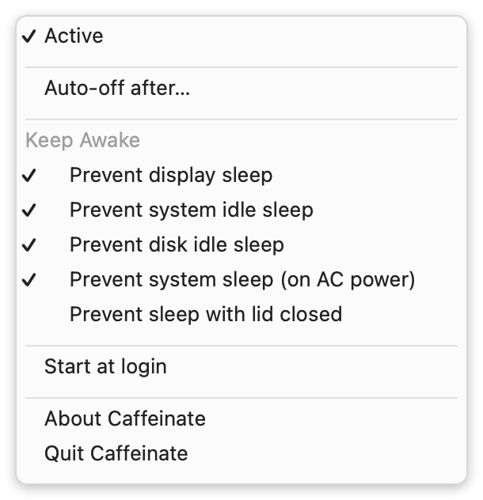

Caffeinate
A macOS menu bar app that keeps your Mac awake.
Click the cup to keep the Mac awake. Click it again to let it sleep. Right-click for the options: which kinds of sleep to prevent, an auto-off timer, start at login, and an option that keeps a MacBook awake with the lid closed.

Install
Homebrew: brew install --cask leok7v/tap/caffeinate
Or download Caffeinate.dmg from the releases. The app is signed and notarized.
Privacy
Caffeinate collects no data. See the privacy policy.
Support
Questions and bug reports: GitHub issues. Source: github.com/leok7v/Caffeinate, MIT license, based on Caffeinate by Lennard Kittner.